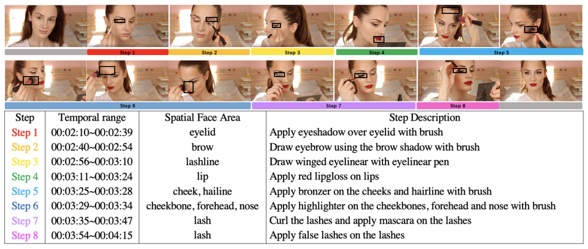

YouMakeup Dataset
YouMakeup is a large-scale multimodal instructional video dataset introduced in YouMakeup: A Large-Scale Domain-Specific Multimodal Dataset for Fine-Grained Semantic Comprehension (EMNLP2019). It contains 2,800 videos from YouTube, spanning more than 420 hours in total. Each video is annotated with a sequence of steps, including temporal boundaries, grounded facial areas and natural language descriptions of each step.
